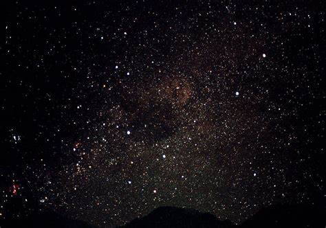

Stars are the most widely recognized astronomical objects, and represent the most fundamental building blocks of galaxies. The age, distribution, and composition of the stars in a galaxy trace the history, dynamics, and evolution of that galaxy. Moreover, stars are responsible for the manufacture and distribution of heavy elements such as carbon, nitrogen, and oxygen, and their characteristics are intimately tied to the characteristics of the planetary systems that may coalesce about them. Consequently, the study of the birth, life, and death of stars is central to the field of astronomy.
Stars are born within the clouds of dust and scattered throughout most galaxies.
A familiar example of such as a dust cloud is the Orion Nebula. Turbulence deep within these clouds gives rise to knots with sufficient mass that the gas and dust can begin to collapse under its own gravitational attraction. As the cloud collapses, the material at the center begins to heat up. Known as a protostar, it is this hot core at the heart of the collapsing cloud that will one day become a star.Three-dimensional computer models of star formation predict that the spinning clouds of collapsing gas and dust may break up into two or three blobs; this would explain why the majority the stars in the Milky Way are paired or in groups of multiple stars.
As the cloud collapses, a dense, hot core forms and begins gathering dust and gas. Not all of this material ends up as part of a star — the remaining dust can become planets, asteroids, or comets or may remain as dust.In some cases, the cloud may not collapse at a steady pace. In January 2004, an amateur astronomer, James McNeil, discovered a small nebula that appeared unexpectedly near the nebula Messier 78, in the constellation of Orion. When observers around the world pointed their instruments at McNeil's Nebula, they found something interesting — its brightness appears to vary. Observations with NASA's Chandra X-ray Observatory provided a likely explanation: the interaction between the young star's magnetic field and the surrounding gas causes episodic increases in brightness.A star the size of our Sun requires about 50 million years to mature from the beginning of the collapse to adulthood. Our Sun will stay in this mature phase (on the main sequence as shown in the Hertzsprung-Russell Diagram) for approximately 10 billion years.
Stars are fueled by the nuclear fusion of hydrogen to form helium deep in their interiors. The outflow of energy from the central regions of the star provides the pressure necessary to keep the star from collapsing under its own weight, and the energy by which it shines.
As shown in the Hertzsprung-Russell Diagram, Main Sequence stars span a wide range of luminosities and colors, and can be classified according to those characteristics. The smallest stars, known as red dwarfs, may contain as little as 10% the mass of the Sun and emit only 0.01% as much energy, glowing feebly at temperatures between 3000-4000K. Despite their diminutive nature, red dwarfs are by far the most numerous stars in the Universe and have lifespans of tens of billions of years.
On the other hand, the most massive stars, known as hypergiants, may be 100 or more times more massive than the Sun, and have surface temperatures of more than 30,000 K. Hypergiants emit hundreds of thousands of times more energy than the Sun, but have lifetimes of only a few million years. Although extreme stars such as these are believed to have been common in the early Universe, today they are extremely rare - the entire Milky Way galaxy contains only a handful of hypergiants.Stars and Their Fates*7In general, the larger a star, the shorter its life, although all but the most massive stars live for billions of years. When a star has fused all the hydrogen in its core, nuclear reactions cease. Deprived of the energy production needed to support it, the core begins to collapse into itself and becomes much hotter. Hydrogen is still available outside the core, so hydrogen fusion continues in a shell surrounding the core. The increasingly hot core also pushes the outer layers of the star outward, causing them to expand and cool, transforming the star into a red giant.If the star is sufficiently massive, the collapsing core may become hot enough to support more exotic nuclear reactions that consume helium and produce a variety of heavier elements up to iron. However, such reactions offer only a temporary reprieve. Gradually, the star's internal nuclear fires become increasingly unstable - sometimes burning furiously, other times dying down. These variations cause the star to pulsate and throw off its outer layers, enshrouding itself in a cocoon of gas and dust. What happens next depends on the size of the core.